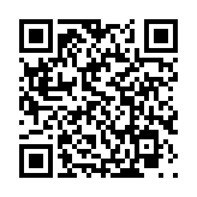
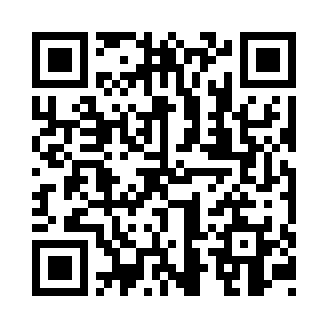

Installér først. Aktivér bagefter.
1 · Installér lagerappen

Scan med telefonens almindelige kamera.
På iPhone: Tryk Del → Føj til hjemmeskærm. Åbn derefter appens ikon på hjemmeskærmen.
2 · Aktivér medarbejderens enhed
Administrator opretter medarbejder og enhedsnavn. Åbn Scan din personlige QR-kode inde i hjemmeskærmsappen, og scan administratorens personlige QR.
Brug Indsæt aktiveringslink, hvis kameraet driller. Brug et nyt personligt link, hvis det gamle allerede blev aktiveret i Safari.
Den fælles installations-QR giver ingen adgang til registreringer.
Installation til kontor

Åbn kontorappen. På PC kan det personlige link åbnes direkte og aktiveres med knappen.